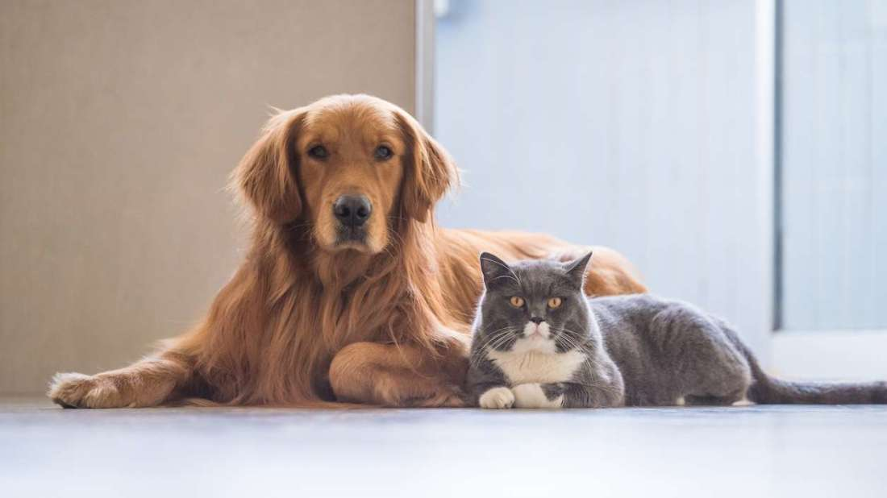

About Us

Paw Me Maybe is a social media site designed for pet owners. On our website, pet owners can connect with nearby pet owners to set up playdates,
or to adopt out to potential pet owners. Users can:
- Create their own Pet Profile
- Set their profile with the city the user is based in, along with pets’ personalities and traits
- Upload images of pets and animals
- View maps that display locations of potential adoptions
- Match and chat with other nearby users to set up playdates
- Match pets with potential pet owners to set up adoption
- View maps that display dog parks within the user’s location